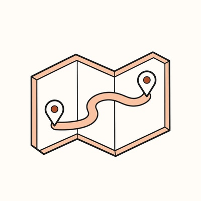
Un parcours d'arrivée sur mesure
Avant l'arrivée, le premier jour, les premières semaines : des quêtes et des niveaux, chaque étape au bon moment.
Préparez chaque arrivée avec Trame. Pour les équipes qui accueillent.
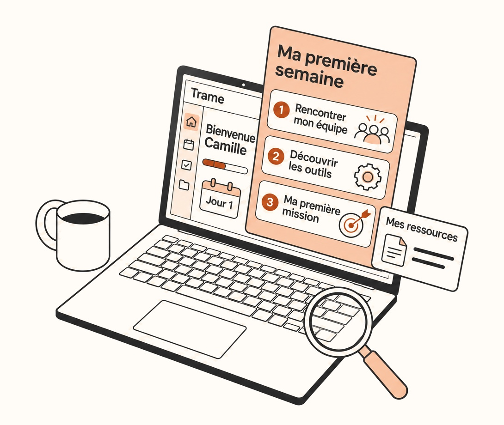
Chaque arrivée coûte à tout le monde.
Du pré-boarding à l'autonomie complète.
Connectez vos outils : Trame analyse vos documents, rassemble le savoir-faire de votre équipe et en tire, avec l'IA, un onboarding sur mesure pour chaque arrivant.
Le problème
Le manager bloque ses journées pour expliquer, la recrue lit des documents sans fin, et les codes de la maison se transmettent au hasard. Quand quelqu'un part, ce qu'il savait part avec lui, et son remplaçant repart de zéro.
Sources : Gallup ; IDC ; BambooHR, 2023 ; HCI et Kronos.
Comment ça marche
Un parcours pensé pour le manager, qui s'adapte à vos outils : de vos documents aux premières vraies tâches de l'arrivant, en trois temps.
01
Connectez vos outils ou importez vos documents : fiche de poste, base de connaissances, process. Trame les analyse, puis soumet au manager des questions de préparation pour compléter ce qui n'est écrit nulle part.
Vos outils et vos documents
02
Parcours, missions, ressources, tutos : l'IA de Trame prépare un onboarding sur mesure, que vous relisez et ajustez avant le premier jour.
Parcours sur mesure
03
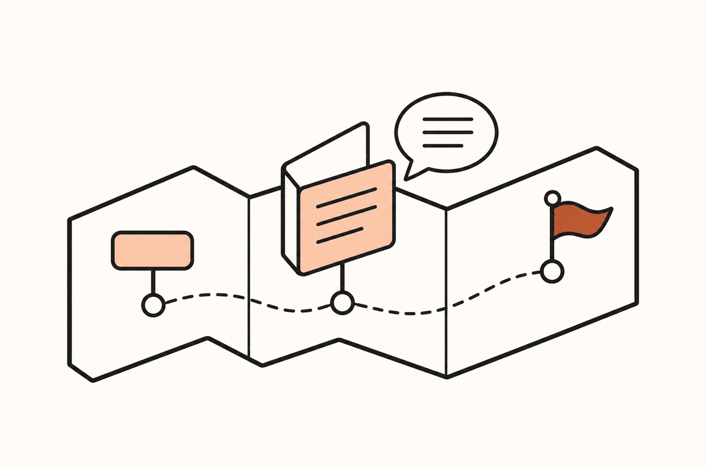
Des quêtes au bon moment, des entraînements sur les vraies tâches, et une réponse à chaque question. Quand l'information n'est pas disponible dans les ressources de l'équipe, Trame prévient le bon collègue.
Parcours de l'arrivant
Intégrations
Trame se connecte aux outils où vit déjà le savoir de votre équipe, et en tire le parcours de chaque arrivant. Vous partez de ce qui existe, pas d'une page blanche.
Rejoindre la bêta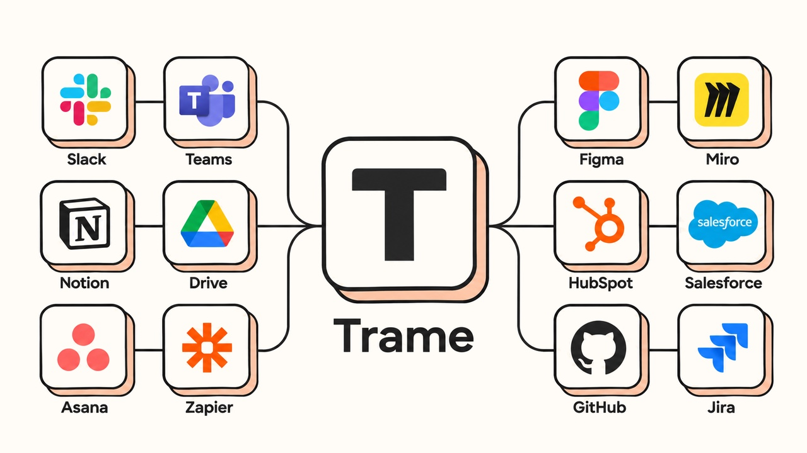
Pour l'arrivant
Une plateforme tout-en-un et ludique, préparée avec l'IA à partir de vos documents et de ce que sait votre équipe.

Avant l'arrivée, le premier jour, les premières semaines : des quêtes et des niveaux, chaque étape au bon moment.
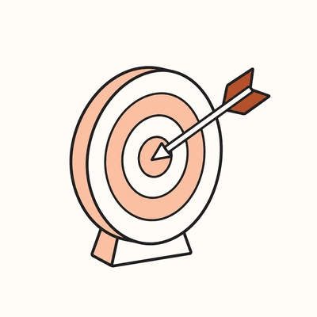
Où en est chaque projet, qui fait quoi, ce qu'on attend de l'arrivant.
Process, outils, clients : des fiches et des vidéos courtes, créées par l'IA à partir de vos documents et des réponses de l'équipe.
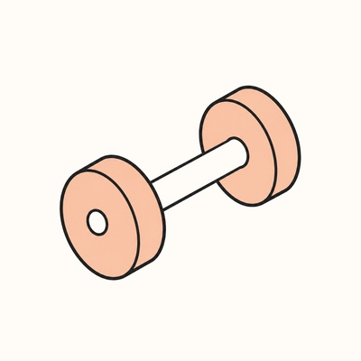
Des exercices tirés du travail réel de l'équipe.
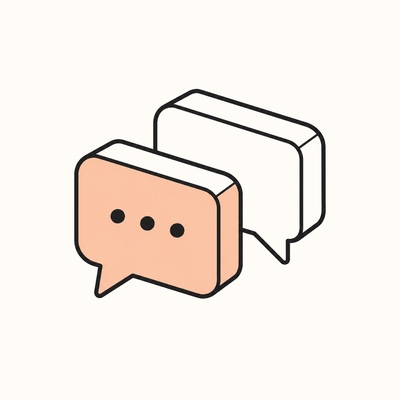
Quand l'information n'est pas dans les ressources de l'équipe, l'outil prévient le bon collègue plutôt que d'inventer une réponse.
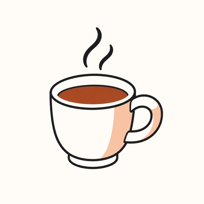
Vos habitudes et vos rituels assimilés.
+82 % de recrues qui restent quand l'accueil est structuré. Source : Brandon Hall Group
Quand quelqu'un part
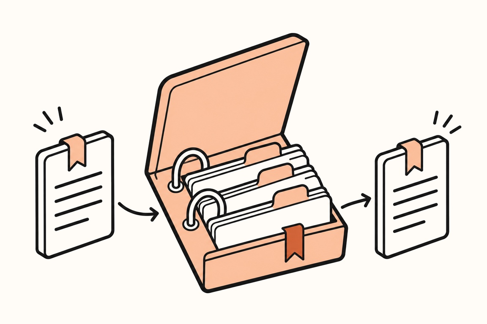
Avant son dernier jour, la personne qui part répond à un entretien guidé dans Trame. Les clients à part, les raccourcis, les bons contacts : tout rejoint la base de l'équipe et l'onboarding de son successeur.
Pour qui
Pensé d'abord pour les startups et PME qui recrutent souvent, et pour les équipes qui accueillent stagiaires et alternants.
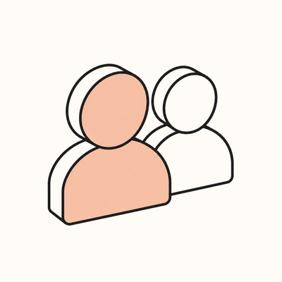
Moins d'heures à répéter les mêmes explications. Plus de temps pour connaître la personne.
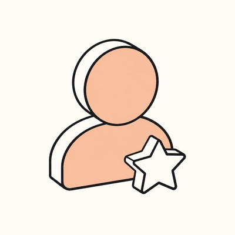
Un premier jour moins stressant, et des premières tâches sans attendre que quelqu'un soit disponible.
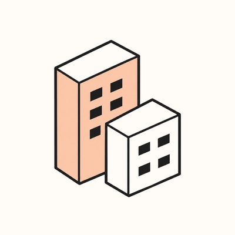
Le savoir reste quand les gens partent. Et un accueil dont vos candidats entendront parler.
La bêta
On cherche nos premières équipes pour tester Trame sur une vraie arrivée, et construire la plateforme avec elles. Laissez-nous votre e-mail : on vous écrit personnellement.
C'est noté, merci !
On vous écrit personnellement à pour en parler.